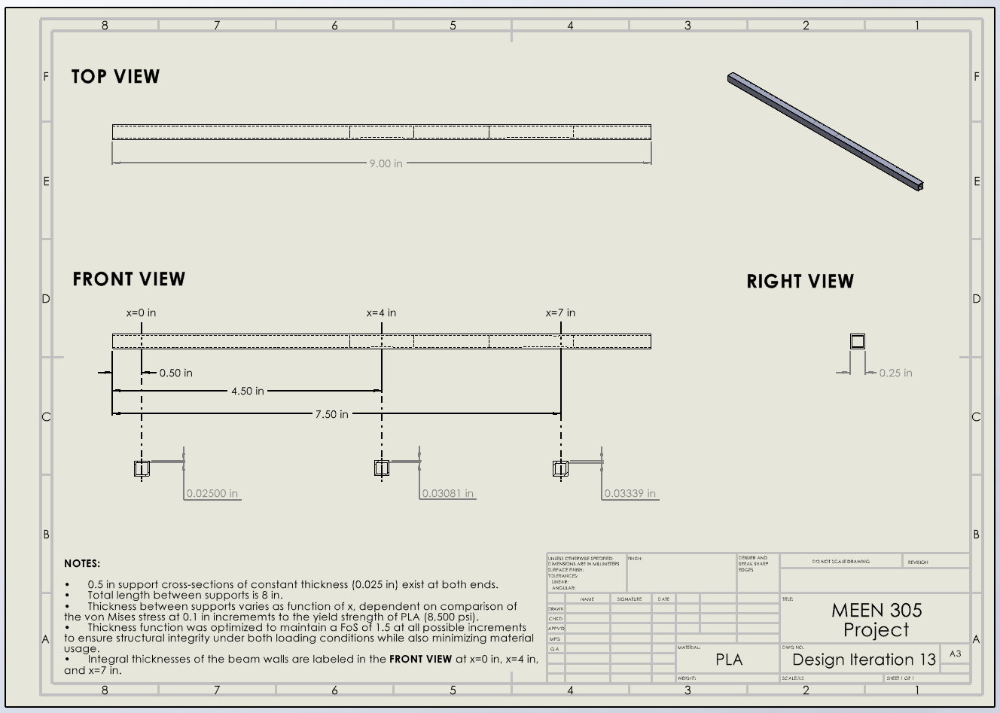

MEEN 305 / STRUCTURAL ANALYSIS
Less material.
More engineering.
Structural beam optimization & experimental validation

The challenge: minimize the weight of a 9-inch PLA beam spanning an 8-inch gap, while designing for two loading conditions and a minimum factor of safety of 1.5.
My contribution
I developed iterations 16–20, created CAD for iteration 18, refined the Excel optimization workflow, and supported simulations and the experimental test setup.
The result—and the lesson
The team’s selected hollow-square design used varying wall thickness. Its measured weight was close to the prediction, while deflection differed substantially. Testing made the limits of idealized supports, material assumptions, and manufacturing precision tangible.
See test results & loading conditions +
Load 1: 5 lb at the span midpoint. Load 2: 12 lb at x = 7 in, with the beam rotated 90°.
| Measurement | Predicted | Measured |
|---|---|---|
| Weight | 0.00840 lb | 0.00882 lb |
| Deflection · load 1 | 0.57 in | 0.75 in |
| Deflection · load 2 | 1.11 in | 0.60 in |
Reported deflection errors: 31.58% and 45.95%. The report also notes limited scale resolution. These are team prototype results; the factor of safety was an analytical design constraint.
Watch load 1 test ↗Watch load 2 test ↗